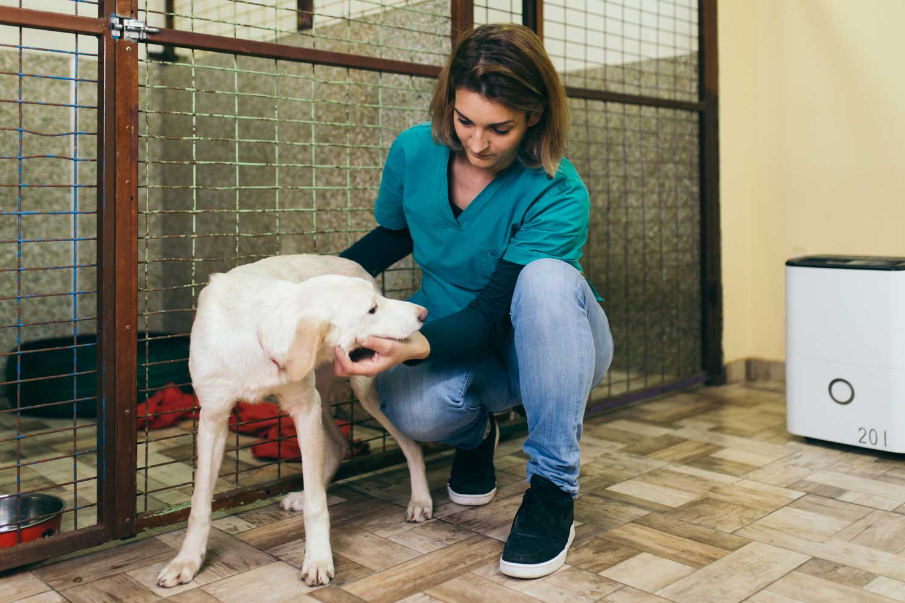

Acerca de Nosotros
Nuestra Misión
En nuestra agencia, nos dedicamos a rescatar perros abandonados de las calles de Tánger y ayudarles a encontrar un hogar lleno de amor. Nuestro objetivo es proporcionarles un ambiente seguro mientras buscan una familia que les brinde una vida mejor. Trabajamos incansablemente para mejorar las condiciones de vida de los animales y promover la adopción responsable.

¿Por Qué Adoptar con Nosotros?
Te ofrecemos todo el apoyo necesario para que tu adopción sea exitosa. Cada perro que llega a nuestra agencia es evaluado médicamente y socializado para adaptarse mejor a su nuevo hogar. Además, proporcionamos orientación antes, durante y después del proceso de adopción, asegurándonos de que tanto el perro como la familia adoptante estén felices y cómodos.

Nuestro Equipo
Contamos con un equipo de voluntarios y profesionales apasionados por los animales que trabajan juntos para rescatar y cuidar a cada perro. Además de ofrecerles un lugar seguro, nos encargamos de su bienestar físico y emocional para garantizar que su transición a un nuevo hogar sea lo más suave posible.

Únete a Nuestra Causa
La adopción no es la única forma de ayudar. Puedes apoyar nuestra misión de diversas maneras: con tu tiempo como voluntario, con donaciones o compartiendo nuestra página y nuestras publicaciones para dar visibilidad a los animales que necesitan un hogar. Juntos podemos hacer una gran diferencia en la vida de muchos perros.
